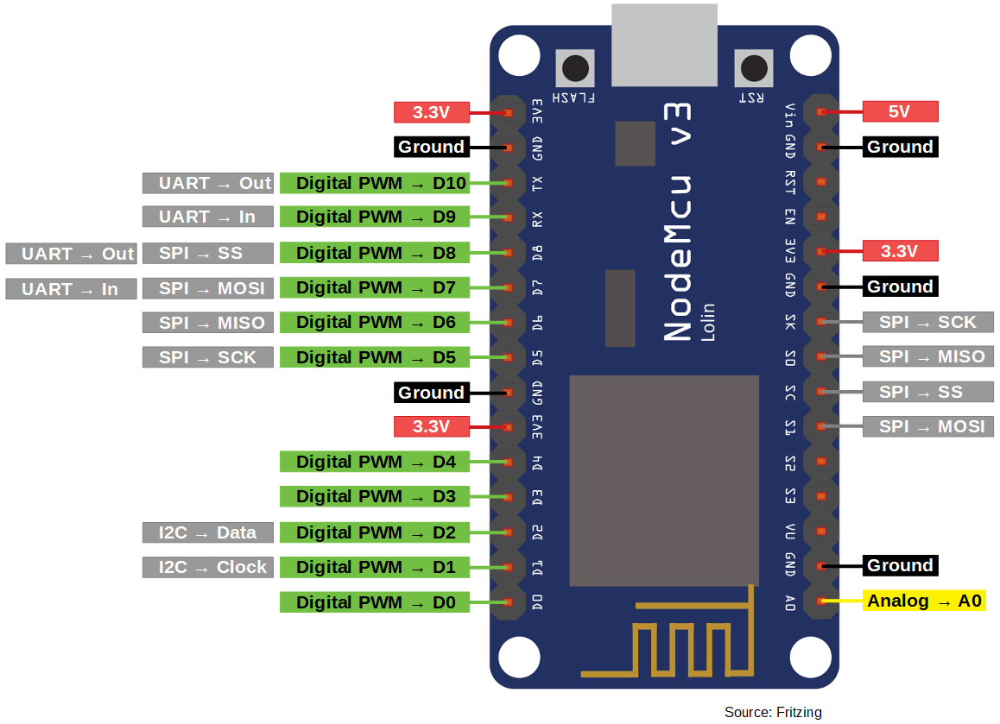
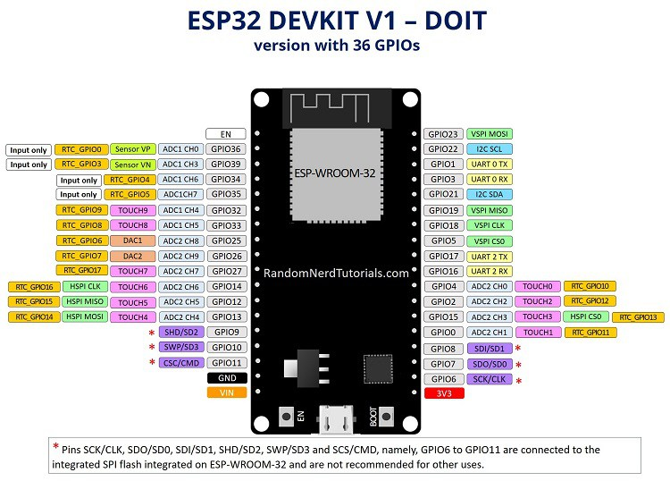

Node Hardware overview
Prototyping
In order to develop the node firmware and server software I used a breadoard prototype. It is comprised of:
- Arduino nano IOT (see bellow)
- Some sensors (selected based on other similar projects.)
- BME680
- CCS811
- SDS011
- A SD card module + 16GB SD card
- The sd card might be quite overkill but well it was cheap and I had no idea how much data I would need to store when I ordered...
- A GPS module (GY-NEO6MV2)
- Used for position measurement in a mobile system.
- Used for clock synchronisation in absence of internet access.
- A small oled screen.
- Used for debug and for user interface.
- Not strictly required from the requirements but I though it would be nice to see the measurement in real time.
- A RTC module.
- This was a it of a mistake since I forgot I could get the clock from the GPS...
MCUs
I have three MCU for this prototype. The reason is that I had a arduino nano on my desk. However, I want to make this into a cheap system and the arduino is FAR from cheap. Thus I went for a NodeMCU(ESP8266), which is quite a lot cheaper for similar specs. I also got its younger brother the ESP-WROOM-32 , a bit more expensive but with far more computation power + embedded bluetooth. I will start with the arduino and switch to the other when they get here... I would also like to try a few diferent MCU to see which hold best against cold temperature.
Arduinot nano IOT
It is an arduino :) .
- SAMD21 Cortex®-M0+ 32bit low power ARM MCU
- RF: u-blox NINA-W102
- IMU: LSM6DS3
- Crypto: ATECC608A

NodeMCU V3
It not an arduino :) .
- ESP8266 does it all.

ESP-WROOM-32
- Datasheet 
Sensors
BME680
Primary sensor of the system. This guy could be replaced by a BME280 to lower cost (if the air quality measurement is deamed useless).
-
Sense:
- Index of air quality (IAQ) from 0 to 500. (If I find some code to compute it...)
- Temperature from -40 °C to 86 °C ±1 °C.
- Pressure from 300 to 1100 hPa ±0.6 hPa.
- humidity from 0 to 100 %r.H ±3 %r.H.
- Valid for 0°C to 65°C.
CCS811
- Sense:
- equivalent CO2 (eCO2) from 400ppm up to 29206ppm.
- equivalent Total Volatile Organic Compound (eTVOC) from 0ppb up to 32768ppb.
- Can include a temperature and humidity compensation.
- Datasheet
SDS011
Particulate matter sensor.
- Sense:
- PM2.5 and PM10 from 0.0-999.9 μg/m3
- Error @ 25 °C and 50 %r.h: Max 15 % and 10 μg/m3
- Unreliable for RH > 80% →paper
- Datasheet
- Library before tweek for samd21 arduino -> link
Work environement
- Air pressure: 86 kPa to 110 kPa
- Humidity
- Storage: 0 %r.h to 90 %r.h
- Operation: < 70 %r.h
- Temperature
- Storage: -20 °C to 60 °C
- Operation: -10 °C to 50 °C
Power:
- Operation voltage: 5 V
- Current
- Active: 70 mA ± 10 mA (300 mW to 400mW (avg 350 mW))
- Sleep: < 4 mA (< 20 mW)
BOM
- In hindsight I totaly got ripped-off for the shipping of the RTC module. (I noticed it when doing this doc.)
- The total might be a bit off I rounded some values.
| Part Name | Type | Unit Price (€) | Shipping cost (€) | Merchant |
|---|---|---|---|---|
| Arduino nano IOT | MCU | 18 + 4.15 | 5.5 | arduino store |
| NodeMcu V3 | MCU | 1.92 | 0.6 | aliexpress |
| ESP-WROOM-32 | MCU | 3.5 | 2 | aliexpress |
| WAVGAT GY-NEO6MV2 | GPS module | 2.92 | 0.5 | aliexpress |
| WAVGAT Micro-SD card | SD card module | 0.36 | 0.5 | aliexpress |
| DS3231 AT24C32 IIC | RTC module | 0.92 | 4 | aliexpress |
| Nova PM SDS011 | PM sensor | 17.38 | 0 | aliexpress |
| BME680 | TPH + gas sensor | 7.84 | 2 | aliexpress |
| CCS811 | tcov/eCO2 sensor | 5.27 | 2 | aliexpress |
| SanDisk A1 16GB | 16GB SD card | 3.5 | 1 | aliexpress |
| 0.96" oled screen | oled screen | 1.6 | 0.9 | aliexpress |
| USB charger 10W | USB charger | 0.96 | 0.7 | aliexpress |
| Total | 67.86 | 19.2 |